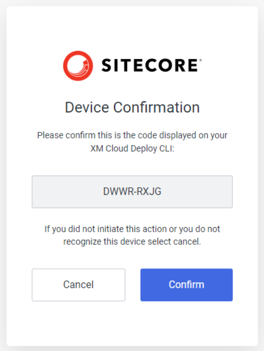

Walkthrough: Creating an XM Cloud project using the Sitecore CLI
Steps for using the Sitecore CLI to deploy your solution to an XM Cloud environment
You can create projects, environments, and deployments with the Sitecore CLI commands provided by the XM Cloud plugin. Using the Sitecore CLI instead of the XM Cloud Deploy app for creating the XM Cloud project is a matter of preference if your project repository is hosted on GitHub, but necessary if your organization hosts source-code repositories on other platforms.
This walkthrough demonstrates using the Sitecore CLI to deploy a Sitecore solution to an XM Cloud environment.
To deploy a solution to an XM Cloud environment you must have the following prerequisites:
The organization and a user account for XM Cloud you obtained during the onboarding process.
Sitecore CLI version 5.0 or later, with the XM Cloud plugin installed.
This walkthrough describes how to:
Log in to XM Cloud.
Create an XM Cloud project.
Create an environment for the XM Cloud project.
Deploy the solution to the environment.
Optional: Obtain the initial source code
If you do not have an XM Cloud-compatible solution and if you do not want to host the source code in a GitHub repository, you can obtain an initial solution by cloning a starter template.
To obtain the initial source code for your XM Cloud project:
Tip
If you use GitHub to host your repositories, the fastest and easiest way to create an XM Cloud project is using the XM Cloud Deploy app. You can then follow the walkthrough to set up your local development environment.
To run CLI commands against the SaaS XM Cloud platform, you must authorize your device and provide your XM Cloud credentials. The login process described here performs the necessary device and user authorization and authentication.
You obtain your authentication credentials during the onboarding process.
To log in to XM Cloud:
In the project working directory, in a command-line window, run the
cloud logincommand:dotnet sitecore cloud login
The CLI immediately displays information about the
[DeviceLogin]process and opens a new browser window.In the browser window, if the device code displayed in the window matches the
User codevalue displayed in the CLI, click Confirm.Note
If the device code and your command line code do not match, it indicates a severe error or potential security issue, and you must click Cancel. Attempt to log out and log in again.
In the Welcome dialog, in the Email address field, provide the email address associated with your XM Cloud user account. Click Continue.

In the Password field, enter your user password. Click Continue.

On successful authentication, the page in the browser displays a success message, and the [DeviceLogin] process in the CLI exits.
Tip
You can implement a non-interactive login flow with an authentication/automation client in XM Cloud Deploy app. Use the resulting client credentials with the dotnet sitecore cloud login command. For ease of use, you can write the command with client credentials in an executable script file.
A project within XM Cloud represents a collection of one or more Sitecore XM environments.
An XM Cloud environment represents a SaaS Sitecore Content Management (CM) tenant along with all the services and supporting tenants for hosting a Sitecore solution. Every environment belongs to a project.
The XM Cloud deployment process deploys an image of your solution to a specified environment. It provisions and configures the necessary infrastructure.
After deploying your solution to the XM Cloud platform, you can continue to develop locally and then deploy customizations to the XM Cloud environment. You can also synchronize items between your local development environment and the XM Cloud CM instance.
See also how to deploy the client/front-end application.